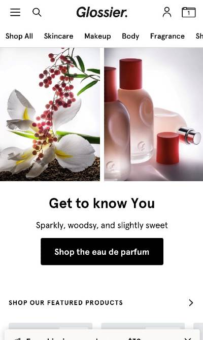
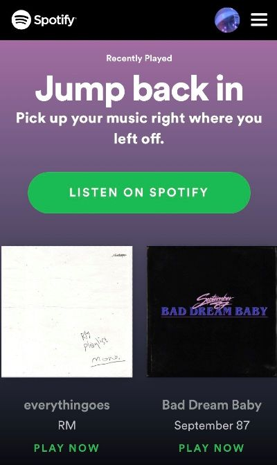

Fitt's Law
Hulu
hulu.com
Fitt’s Law revolves around the time, distance, size of the intended target. This law is commonly seen on sites with buttons on the most and buttons they want to draw attention to. Hulu’s welcome/sign up page is a great example of this principle. The largest button is located in the center of the page to give easy access to those wanting to start a Free Trial with Hulu. This button is strategically placed under the text advertising their lowest subscription price drawing you to the free trial before having to commit fully. This same set up is seen throughout the page as you scroll down for other offers.
White Space & CLean Design
Glossier
glossier.com

Websites utilizing white space and clean designs tend to be more popular and see more activity. Because there is significantly less information and visuals to contend with, we are more likely to revisit. Glossier. is a brand that has cultivated this principle in every aspect of their business including their website. Fonts and the color scheme are kept simple and repetitive. Images seen are the main source color but are kept within the overall theme. The use of white space keeps the attention on the intended text and images.
Contrast
Spotify
spotify.com

Contrast is using opposites to draw us to the intended target of our attention. The most common use of this principle is using light and dark, and various complementary colors. Spotify utilizes a darker background with bright white fonts to achieve this. On their home page you are also invited to Listen on Spotify, the button is a bright green set on dark purple. This use of contrast brings your attention to the button almost immediately upon opening the site.